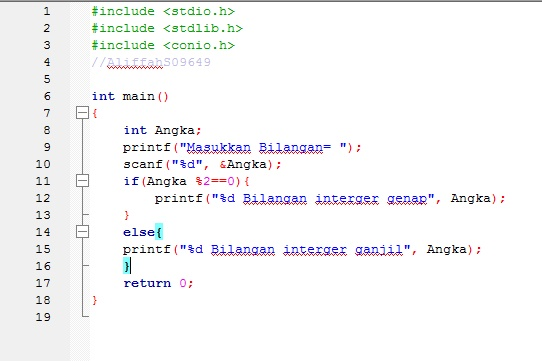
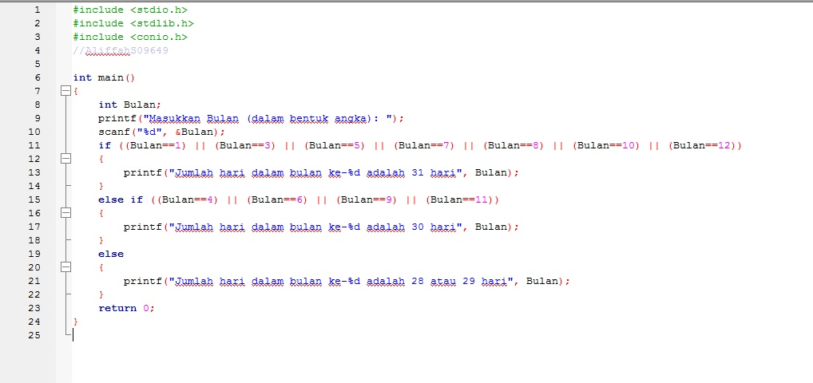
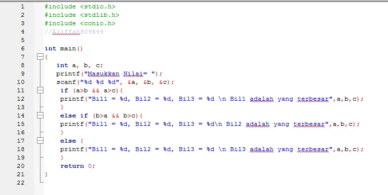

Dasar Pemrograman adalah rangkaian intruksi-intruksi dalam bahasa komputer yang disusun secara logika dan sistematis.
Pemrograman sendir berarti suatu kumpulan urutan perintah ke komputer untuk mengerjakan sesuatu, dimana instruksi
tersebut menggunakan bahsa yang dimengerti oleh komputer atau dikenal dengan bahsa pemrograman.
Konsep Dasar Pemrogaman pada umumnya adalah IPO (Input Proses Output), lalu dikembangkan menjadi
Originating -> Input -> Proses -> Output -> Distribution.
|  |
|  |
Program Mencari Nilai Terbesar
|  |